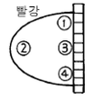

사진기능사 (2004-02-01 기출문제)
1과목: 사진일반
1. 카메라 옵스큐라는 오늘날의 정밀한 카메라로 진화하기 까지 여러차례 발전적인 탈바꿈을 하게 되었다. 최초의 개량안은 무엇인가?
- 카메라 옵스큐라의 구멍에 볼록렌즈를 끼운다.
- 카메라 옵스큐라의 구멍에 오목렌즈를 끼운다.
- 카메라 옵스큐라의 구멍의 위치를 조절할 수 있도록 한다.
- 카메라 옵스큐라 자체의 크기를 줄인다.
(정답률: 68%)

2. 인물(人物) 사진촬영(撮影)에 있어서 가장 알맞은 광선(光線)의 각도는?
- 35° 광
- 15° 광
- 45° 광
- 90° 광
(정답률: 97%)
3. 빛이 입사할 때 대부분의 파장을 반사한다면 그 색은?
- 흰색
- 검정
- 빨강
- 보라
(정답률: 88%)
4. 현상 처리전의 컬러 네거티브(Negative)필름의 유제 속에 있는 청색감광층은 처리 후에는 어떤 색으로 발색 하는가?
- 황색(Yellow)
- 적색(Magenta)
- 청색(Cyan)
- 녹색(Green)
(정답률: 71%)
5. 다음 중 인간의 눈에 가장 예민한 순서로 짝지어진 색의 속성은?
- 명도 - 채도 - 색상
- 명도 - 색상 - 채도
- 색상 - 채도 - 명도
- 채도 - 색상 - 명도
(정답률: 72%)
6. 프린트한 인화지에 검은 스크래치선이 있다면 가장 큰 원인이 되는 것은?
- 거칠게 다루므로써 일어나는 네거티브 유제층에 난 스크래치
- 노출하기전에 먼지가 필름 위에 묻었을 때
- 네거티브, 인화프레임유리, 유리네거티브, 캐리어 위에 세밀한 먼지가 묻어 있을 때
- 기름기가 있거나 지문이 캐리어에 묻어 있을 때
(정답률: 60%)
7. 다음 광원 중 인공광에 속하지 않는 광원은?
- 사진용전구
- 리플렉터램프
- 형광등
- 태양광
(정답률: 92%)
8. 노출 관용도가 가장 적게 한정되어 있는 필름은?
- 흑백필름
- 컬러 네거티브 필름
- 컬러 리버설 필름
- 컬러 프린트 필름
(정답률: 52%)
9. 다음 그림은 색입체를 나타낸 개념도이다. 어두운 빨강을 나타낸 곳은?

- 림
- 립
- 릿
- 링
(정답률: 71%)
10. 흐린날이나 비오는날 야외 사진촬영시 사진에 전반적으로 나타나는 색조는?
- 파랑색 계통
- 주황색 계통
- 노랑색 계통
- 빨강색 계통
(정답률: 88%)
11. 색의 진출과 후퇴, 팽창과 수축에 대한 설명이다. 잘못된 것은?
- 장파장쪽 색상이 진출해 보이고 단파장쪽 색상은 후퇴해 보인다.
- 밝은 색은 진출해 보이고 어두운 색은 후퇴해 보인다.
- 어두운 색은 밝은 색보다 크게 보인다.
- 가운데 있는 색보다 배경의 색이 밝으면 그 가운데 있는 색은 작게 보인다.
(정답률: 71%)
12. 암실에서 작업할 경우 지켜야 할 사항이 아닌 것은?
- 암실에서 작업할 때에는 정기적으로 환기를 시켜야 한다.
- 약품이 눈에 들어가면 손으로 문지른다.
- 사용한 약품은 폐기물 처리를 별도로 해야 한다.
- 작업 후에는 항상 손을 청결하게 닦도록 한다.
(정답률: 94%)
13. 컬러필름 현상과정 중 금속은 화상을 할로겐화은으로 변화시키는 과정이 있다. 어떠한 과정에 속하는가?
- 제1현상(흑백현상)
- 정착
- 표백
- 발색현상
(정답률: 44%)
14. 다음은 흑백인화 과정이다. 잘못된 것은?
- 현상액이 적정온도를 유지하고 있는지를 점검한다.
- 현상과정에서 인화지가 약품에 잠길 수 있도록 집게 로 눌러준다.
- RC인화지의 경우 Ferro-Type 건조기에 넣고 건조 시켜야 한다.
- 정착이 끝난 인화지를 흐르는 물에 수세 시킨다.
(정답률: 62%)
15. 티오황산나트륨을 이용하여 미감광은을 용해시키는 정착 방법은 누구에 의하여 최초로 되어졌는가?
- 존 허셸
- 다게르
- 탈보트
- 아라고
(정답률: 34%)
16. 일반 촬영용 필름으로 육안으로 보는 것과 같이 모든 색을 느낄 수 있게 만든 필름은?
- 청감성
- 정색성
- 전정색성
- 입상성
(정답률: 74%)
17. 현상촉진제가 아닌 것은?
- K2CO3
- KBr
- KOH
- NaBO2·4H2O
(정답률: 35%)
18. 현상억제제로 주로 사용되는 약품은?
- 메톨
- 페니돈
- 브롬화칼륨
- 하이드로퀴논
(정답률: 63%)
19. 흑백사진 필름현상에 사용하는 현상약은?
- E-3
- D-72
- D-76
- E-6
(정답률: 56%)
20. 일반적으로 수세능률이 가장 좋을 때의 물의 pH는?
- 5.0 - 6.0
- 7.0 - 10.0
- 1.0 - 2.0
- 3.0 - 4.0
(정답률: 62%)
2과목: 사진재료 및 현상
21. 흑백사진 현상처리 과정의 순서로써 가장 옳은 것은?
- 현상 → 정지 → 정착 → 수세 → 건조
- 현상 → 정착 → 수세 → 정지 → 건조
- 정착 → 현상 → 수세 → 정지 → 건조
- 현상 → 수세 → 정착 → 정지 → 건조
(정답률: 69%)
22. Kodak R-4(Farmer's reducer)는 주로 어디에 사용 되는가?
- 현상 부족시
- 현상 과다시
- 현상시간 연장시
- 미립자 현상시
(정답률: 53%)
23. 인화지 현상액으로 사용되는 것은?
- D-76
- D-72
- D-23
- DK-50
(정답률: 40%)
24. 인화지의 종류를 감광재료의 성분과 감광도에 따라서 나눌 때 브롬화은을 사용한 인화지로 다른 종류보다 가장 감도가 빠른 확대용 인화지지만 특수한 목적에 주로 이용 되는 것은?
- 가스라이트지
- 클로로브로마이드지
- 브로마이드지
- RC지
(정답률: 66%)
25. 감광재료에 사용되는 할로겐 원소가 아닌 것은?
- Br(브롬)
- I(요드)
- Cl(염소)
- Ag(은)
(정답률: 38%)
26. (NH4)2S2O3는 무엇으로 사용하는가?
- 현상 촉진제
- 현상 주약
- 정착 주약
- 현상 보충
(정답률: 45%)
27. 다음 중 필름(film)의 감광주체와 가장 거리가 먼 것은?
- 염화은
- 브롬화은
- 젤라틴
- 할로겐화은
(정답률: 72%)
28. 인화지의 지지체로 사용되는 종이의 성질로 적합하지 않은 것은?
- 두께가 일정해야 한다.
- 색상, 반사가 균일해야 한다.
- 정착액 흡수가 잘 되어야 한다.
- 종이면에서 오는 화학적 변화가 없어야 한다.
(정답률: 40%)
29. 필름이나 인화지에 포함되어 있는 현상보조약품으로 저농도부의 세부묘사와 순수한 흰색에서 검정에 이르는 폭넓은 톤의 재현을 가능하게 하는 것은?
- 브롬화칼륨
- 탄산나트륨
- 수산화나트륨
- 아황산나트륨
(정답률: 48%)
30. 필름과 인화지의 변색과 장기적인 보존을 위하여 젤라틴 막이나 베이스에 있는 하이포와 기타 약물을 제거하는 작업을 무엇이라 하는가?
- 수정
- 정착
- 수세
- 조색
(정답률: 86%)
31. 일안리플렉스 카메라의 특성을 설명한 것으로 알맞는 것은?
- 촬영용 렌즈와 파인더용 렌즈가 같아서 촬영되는 그대로의 화상을 볼 수 있다.
- 거리계와 파인더창이 연동되어 초점을 조절할 수있는 방식이다.
- 저속 셔터를 이용한 촬영시에도 피사체를 계속 볼 수 있다.
- 근거리 촬영시에는 시차가 생기기 쉽다.
(정답률: 62%)
32. 일안 반사식 카메라의 특징이 아닌 것은?
- 사차가 크다.
- 렌즈 교환이 자유롭다.
- 기회 포착이 쉽다.
- 교환렌즈의 효과를 파인더로 볼 수 있다.
(정답률: 83%)
33. 핀홀(Pinhole)카메라는 빛의 어떤 성질을 이용한 것인가?
- 직진
- 반사
- 굴절
- 분광
(정답률: 59%)
34. 동일한 거리에서 촬영할 때 피사체의 배경을 흐리게(outfocus)하는데 가장 적합한 렌즈는?
- 망원렌즈
- 표준렌즈
- 광각렌즈
- 어안렌즈
(정답률: 88%)
35. 흑백사진과 컬러사진 양쪽에서 다같은 목적으로 사용되는 필터는?
- PL
- G
- YG
- O
(정답률: 76%)
36. ND필터(Neutral density filter)의 주된 역할은?
- 색에 안정감을 준다.
- 회색조로 만든다.
- 광량을 감소시킨다.
- 콘트라스트를 강조한다.
(정답률: 81%)
37. 카메라의 셔터에 내장되어 있는 싱크로장치의 전기접점 종류가 아닌 것은?
- M
- X
- N
- FP
(정답률: 57%)
38. Daylight Type Color Film의 경우 정상적인 색으로 발색 하기 위하여 다음의 어느 날씨에 맞춰서 만들었는가?
- 청명한 날의 아침
- 흐린날의 정오
- 청명한 날의 정오
- 흐린날의 오후
(정답률: 80%)
39. 6 × 6판 네거티브로 확대인화할 때 확대기 렌즈의 초점 거리로 적합한 것은?
- 50㎜
- 80㎜
- 135㎜
- 210㎜
(정답률: 62%)
40. 흑백암실에서 인화작업을 할 때 전혀 사용할 수 없는 안전등의 색은?
- 파랑색
- 노랑색
- 주황색
- 빨강색
(정답률: 81%)
3과목: 사진기계 및 촬영
41. 태양광(한낮)의 색온도(色溫度) 범위에 가장 가까운것은?
- 3500 - 4000 K
- 4500 - 5000 K
- 5500 - 6000 K
- 1200 - 2300 K
(정답률: 81%)
42. 소형 카메라일 경우 교환렌즈의 화각을 두루 갖춘 보조 파인더는?
- 유니버설 파인더
- 투시 파인더
- 프리즘 파인더
- 반사 파인더
(정답률: 73%)
43. 대형카메라를 크게 앞부분과 뒷부분으로 나눌 경우 뒷부분에 사용되는 액세서리가 아닌 것은?
- 렌즈 후드
- 쌍안 루뻬
- 밀러 아답터
- 초점유리후드
(정답률: 73%)
44. 슬라이드 필름으로 촬영할 때에 노출의 과부족에 민감하므로 노출의 실수를 보완할 수 있는 기능은?
- 브라케팅(bracketing)
- 무브먼트(movement)
- 컨버터(converter)
- 클로즈업(close up)
(정답률: 92%)
45. 흑백 촬영시 Y2필터(노란색)로 맑은 하늘에 구름을 촬영했을 때 다음 어느 효과를 얻을 수 있는가?
- 구름은 검게 하늘은 희게 나온다.
- 구름과 하늘이 모두 희게 나온다.
- 구름은 희게 하늘은 검게 나온다.
- 구름과 하늘이 모두 검게 나온다.
(정답률: 78%)
46. 안개 낀 원경의 촬영은 단파장 광선이 산란하여 잘 보이 지 않게 된다. 이와 같은 현상과 관계있는 것은?
- 헤이즈
- 포그
- 할레이션
- 이레디에이션
(정답률: 49%)
47. 전자플래시(Electronic flash)의 특성과 거리가 먼 것은?
- 고속순간 광원이므로 어두운 곳에서 순간적 vision 포착 가능
- 멀티플 플래시에 의한 연속동작의 단계적 표현
- 어두운 곳에서 주광원으로서 사용 가능
- 1회용 인공광원이므로 매우 비경제적임
(정답률: 79%)
48. 렌즈가 회전하는 방식의 초광각 시야를 촬영하기 위한 카메라는?
- 폴라로이드 랜드 카메라(Polaroid land camera)
- 파노라마 카메라(Panorama camera)
- 리플렉스 카메라(Reflex camera)
- 프레스 카메라(Press camera)
(정답률: 86%)
49. 소형 카메라에 사용되는 렌즈로서 좌우 평행이동 장치가 내장되어 화상의 교정 효과를 얻을 수 있는 렌즈는?
- 어안렌즈
- 시프트 렌즈
- 클로즈업 렌즈
- 마이크로 렌즈
(정답률: 84%)
50. 빛의 방향에 따른 특성 중에서 적당한 입체감이 있고 자연스러운 느낌이 들며 피사체와 카메라의 45° 방향에서 비추는 조명 광선은?
- 정면광
- 사광
- 측광
- 역광
(정답률: 79%)
51. 렌즈셔터와 포컬플레인 셔터의 특징을 비교할 때 렌즈 셔터의 장점은?
- 촬영도중 렌즈교환을 자유롭게 할 수 있다.
- 고속셔터를 끊을 때도 스트로보 동조 촬영을 할수 있다.
- 대구경의 렌즈를 설치할 수 있다.
- 중간 링, 컨버터 등을 쉽게 끼워 쓸 수 있다.
(정답률: 73%)
52. 표준렌즈의 초점거리는 무엇에 의해 결정되는가?
- 렌즈의 밝기
- 파인더의 크기
- 렌즈의 길이
- 화면의 대각선의 길이
(정답률: 73%)
53. 카메라에 내장된 반사식 노출계를 이용하여 전등이나 태양광과 같은 강한 발광체를 화면내에 두고 노출을 측정할 경우 일반적으로 그 결과는 어떻게 나오는가?
- 노출 부족
- 노출 과다
- 적정 노출
- 노출 과다와 노출부족이 동시에 나타남
(정답률: 49%)
54. 집광식 확대기의 특징이 아닌 것은?
- 세부묘사가 좋다.
- 노광시간이 짧다.
- 경조의 화상을 나타낸다.
- 입자와 흠이 잘 나타나지 않는다.
(정답률: 67%)
55. ASA 100일 때 Guide Number가 40인 전자플래시로 5m 거리의 피사체를 촬영코자 한다. 다음 중 가장 적당한 f값은? (반사나 기타 노출에 영향을 줄 수 있는 요인은 배제)
- f/11
- f/5.6
- f/8
- f/4
(정답률: 95%)
56. 피사체와 전자플래시와의 거리가 3m였을 때 f/8이 적정노출이었다. 여러가지 효과를 감안하여 전자플래시를 6m 거리에 설치하였다. 이 경우의 적정노출은?(실내반사나 기타 노출에 영향을 줄 수 있는 요인들은배제)
- f/5.6
- f/4
- f/11
- f/16
(정답률: 68%)
57. 일반적인 카메라의 취급법으로 옳지 못한 것은?
- 카메라를 떨어 뜨리거나 부딪히면 고장을 일으킬수 있다.
- 렌즈에 지문이 묻었을 때 렌즈 클리너로 닦아낸다.
- 시원하고 공기가 잘 통하는 곳에 보관한다.
- 렌즈 표면에 이물질이 묻은 경우 손수건이나 휴지로 깨끗이 닦아낸다.
(정답률: 72%)
58. 입사식 노출계에 대한 설명으로 틀린 것은?
- 흰색 피사체는 희게 검정색 피사체는 검게 표현될수 있다.
- 수광부가 하얀 플라스틱 반투명한 반구형으로 되어 있다.
- 수광부에서는 180° 까지 모든 빛을 받아 들인다.
- 수광부에 닿아 빛이 반사되는 반사량을 재는 것이다.
(정답률: 61%)
59. 화면을 여러 부분으로 분할하여 특히 차이가 나는 부분을 제외한 평균노출을 측정하는 노출 측광 방식은?
- 다분할 측광 방식
- 스포트 측광 방식
- 중앙부 중점 측광 방식
- 평균 측광 방식
(정답률: 63%)
60. 플래시 동조(Flash Synchronize)란 무엇인가?
- 셔터가 완전히 열린 상태에서 플래시가 동작하는 것
- 기구를 이용하여 플래시를 발광시키는 것
- 플래시 빛이 셔터와 무관하게 스스로 발광하는 모드
- 플래시 빛으로 피사체를 비추는 것
(정답률: 84%)